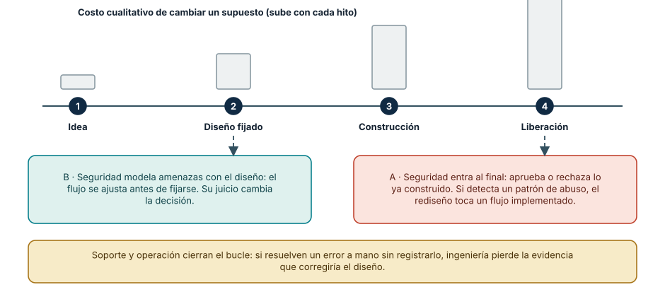
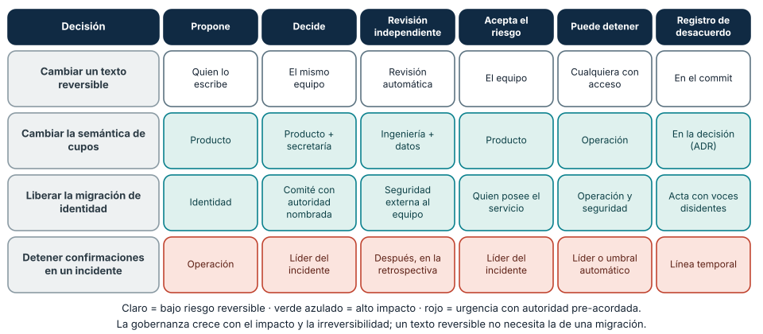
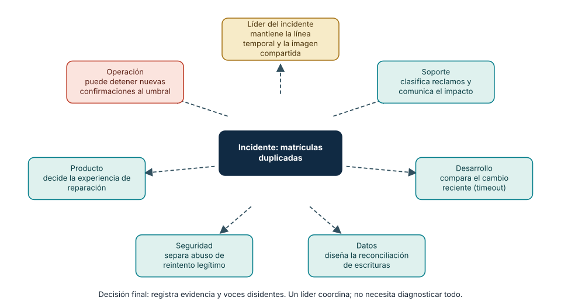

← SE-004 · ↑ Parte 00 · 📚 Índice completo · SE-006 →
Antes de empezar
El análisis ético de SE-004 identificó voces que una decisión técnica no puede ignorar. Ahora debes incorporarlas al trabajo sin convertir cada decisión en una reunión masiva. Campus Abierto sufre un incidente: soporte ve síntomas, datos detecta un patrón, seguridad limita accesos y desarrollo conoce el cambio reciente, pero la información no cruza las fronteras organizativas.
Diseñarás una red de autoridad, consulta, evidencia y escalamiento. El producto de la clase no será un organigrama, sino interfaces de colaboración que puedan funcionar bajo presión. SE-006 preguntará cómo esas personas distinguen convicción de evidencia cuando deben escoger una explicación.
Prerrequisitos
Responsabilidad y juicio profesional de SE-003–SE-004.
Problema auténtico
Un incidente pasa entre desarrollo, datos, seguridad y soporte. Todos participaron, nadie tenía la imagen completa y cada equipo optimizó su métrica. Nombrar más roles no repara interfaces de colaboración.
Objetivos observables
Relacionarás roles con decisiones, diseñarás transferencias y revisiones, distinguirás especialización de silo y crearás una matriz de autoridad.
Temas y por qué importan
| Área | Pregunta |
|---|---|
| Producto | ¿qué resultado y para quién? |
| Diseño/UX | ¿qué tarea y contexto? |
| Ingeniería | ¿qué comportamiento y cambio? |
| Calidad/seguridad | ¿qué riesgo y evidencia? |
| Operación/soporte | ¿qué ocurre realmente? |
Mapa conceptual
Ver la notación fuente del diagrama
flowchart LR
P[Problema] --> D[Decisión]
D --> C[Construcción]
C --> O[Operación]
O --> E[Evidencia]
E --> P
X[Producto UX Datos Seguridad Soporte] --- DLos roles aportan perspectivas al mismo bucle; no son etapas que lanzan trabajo sobre una pared.
Conceptos y decisiones
1. Rol, especialidad, responsabilidad y cargo no son equivalentes
Un rol agrupa responsabilidades necesarias en un contexto: quien facilita una retrospectiva o responde por un servicio puede cambiar sin que cambie su cargo. Una especialidad expresa profundidad de conocimiento y juicio. La responsabilidad se refiere a un resultado; la autoridad, a la capacidad legítima de decidir. Un cargo organizativo puede combinar varios roles o no describirlos con precisión.
Separar estos conceptos evita diseñar el trabajo alrededor de títulos. Campus Abierto necesita que alguien decida semántica de cupos, que una persona competente revise privacidad y que operación pueda detener una liberación. No necesita necesariamente tres departamentos con esos nombres. En un equipo pequeño una persona puede usar varios “sombreros”, pero los conflictos y las competencias siguen existiendo y deben declararse.
2. Especialización aporta profundidad; el silo interrumpe el aprendizaje
Un especialista puede reconocer modos de fallo invisibles para un generalista. El problema aparece cuando su conocimiento entra tarde como aprobación o cuando una señal no puede cruzar el límite del equipo. Si seguridad conoce un patrón de abuso, pero solo revisa al final, el diseño ya puede depender de supuestos costosos de cambiar. Si soporte resuelve manualmente el mismo error sin registrarlo, ingeniería pierde evidencia del comportamiento real.
La alternativa no es que todas las personas hagan todo. Se diseñan momentos y artefactos donde la especialidad cambia la decisión: modelado de amenazas antes de fijar el flujo, revisión de accesibilidad con prototipo, criterios operativos antes de desplegar y feedback de soporte después. La colaboración efectiva conserva profundidad y hace permeable el conocimiento relevante.

Cómo leer la figura. Las barras grises sugieren, de forma cualitativa, que cambiar un supuesto cuesta más a medida que el diseño se fija y se construye. En el carril B, seguridad modela amenazas cuando el flujo todavía es maleable y su conocimiento *cambia la decisión*. En el carril A, la misma persona, con el mismo conocimiento, solo puede aprobar o rechazar lo construido: la especialidad existe, pero entró cuando ya no podía influir sin rehacer. La franja inferior recuerda el otro extremo del silo: la señal que nunca llega a ingeniería. Dónde deja de valer: la altura de las barras no es una medición; es una intuición ordenada que cada equipo debe calibrar con su propio historial de retrabajo. Además, adelantar una especialidad no la sustituye: una revisión final sigue siendo necesaria para lo que cambió durante la construcción.
3. Las interfaces de colaboración también se diseñan
Una reunión no garantiza colaboración. Puede reunir perspectivas sin producir una decisión, ocultar desacuerdo o excluir a quien no comparte horario o idioma. Una interfaz de trabajo saludable declara:
- qué información o artefacto recibe;
- qué pregunta debe responder y con qué competencia;
- qué salida y criterio de aceptación produce;
- en qué plazo y por qué canal;
- qué ocurre si falta evidencia o existe desacuerdo;
- quién posee la decisión final y quién puede escalar.
El contrato no busca burocracia, sino reducir espera y reproceso. Puede ser una tabla breve en una decisión, una prueba de contrato, un runbook o una revisión asincrónica. Debe ajustarse al riesgo: cambiar un texto reversible no requiere la gobernanza de una migración de identidad.
4. Derechos de decisión y revisión independiente
RACI ayuda a visualizar quién responde, ejecuta, consulta y recibe información, pero no resuelve por sí solo cómo se decide. Una matriz puede contener una “A” sin tiempo, competencia o acceso a evidencia. Conviene añadir quién propone, quién acepta el riesgo, quién puede detener y cómo se conserva el desacuerdo.
La revisión independiente aporta una perspectiva menos comprometida con la autoría. No significa desconocimiento ni neutralidad absoluta. La persona revisora necesita contexto y autoridad para cuestionar. En equipos pequeños, si la misma persona propone y revisa, se limita el alcance, se buscan criterios automatizados o revisión externa y se registra la limitación. A mayor impacto e irreversibilidad, más importante es separar incentivos.

Cómo leer la figura. Las filas van de menor a mayor impacto y urgencia. Cambiar un texto reversible lo decide el propio equipo con una revisión automática; liberar una migración de identidad separa quien propone, quien decide, quien revisa de forma independiente y quien acepta el riesgo, y registra el desacuerdo. La última fila muestra una excepción legítima: en un incidente la autoridad de parada está pre-acordada para actuar rápido, y la revisión ocurre después. Dónde deja de valer: los nombres de rol son ilustrativos. Lo que debe sobrevivir al traslado a otra organización es el principio: la gobernanza es proporcional al riesgo, y cada dimensión tiene un propietario que existe antes del conflicto.
5. Colaborar bajo presión requiere protocolos previos
Durante un incidente no hay tiempo para descubrir quién posee una dependencia o qué canal es confiable. El protocolo define liderazgo operativo, registro temporal, comunicación, especialistas convocables y autoridad para mitigar. La persona que coordina no necesita diagnosticar todo; mantiene una imagen compartida y evita cambios contradictorios.
Una retrospectiva posterior analiza condiciones, no culpabilidad individual. Pregunta qué información faltó, qué interfaz retrasó y qué protección habría reducido el daño. Si solo concluye “comunicar mejor”, no ha diseñado ninguna mejora verificable.
Caso conductor: incidente de matrículas duplicadas
Soporte recibe reclamos; datos detecta escrituras repetidas; seguridad observa reintentos desde sesiones legítimas; desarrollo recuerda un cambio de timeout. Cada equipo posee una parte y puede equivocarse si actúa aislado. Bloquear cuentas reduce duplicados, pero daña a personas; revertir código puede no revertir escrituras.
La red de colaboración asigna: soporte clasifica y comunica impacto; una persona lidera el incidente y conserva la línea temporal; desarrollo compara el cambio; datos diseña reconciliación; seguridad diferencia abuso de reintento; producto decide la experiencia de reparación. Operación puede detener nuevas confirmaciones si cruza el umbral acordado. La decisión final registra evidencia y voces disidentes.
El flujo no termina al restaurar el servicio. Las personas afectadas reciben estado y corrección; el contrato de idempotencia cambia; la señal de duplicado entra al tablero; y el mapa de decisiones se actualiza. Así la colaboración produce aprendizaje y no solo coordinación momentánea.

Cómo leer la figura. No hay jerarquía: el nodo central es el incidente y cada rol aporta una pieza que los demás no ven. El líder conserva la línea temporal y la imagen compartida (no diagnostica todo); soporte, desarrollo, datos y seguridad contribuyen evidencia distinta; producto decide la experiencia de reparación; operación puede detener nuevas confirmaciones al cruzarse un umbral acordado *antes* del incidente. Dónde deja de valer: la figura omite el tiempo. En un incidente real las aportaciones llegan en desorden, hay información contradictoria y personas que cambian de turno; por eso el protocolo previo y el registro temporal importan más que el diagrama.
Definiciones de trabajo
- rol: conjunto contextual de responsabilidades;
- especialidad: profundidad para emitir juicio en un dominio;
- handoff: transferencia de trabajo y contexto con aceptación;
- revisión independiente: evaluación sin autoría directa ni incentivo dominante;
- escalamiento: traslado explícito a autoridad capaz de decidir.
Glosario
Bus factor mide concentración de conocimiento. Team topology describe límites e interacción de equipos. Facilitación estructura participación sin apropiarse de la decisión.
Ejemplo mínimo
«Backend entrega endpoint» es insuficiente. Un contrato útil incluye semántica, errores, privacidad, ejemplos, compatibilidad y persona que acepta.
Ejemplo profesional
En recuperación de cuenta, producto define resultado, UX diseña prueba comprensible, seguridad modela abuso, soporte aporta casos y plataforma implementa identidad. La decisión sobre fricción pertenece al conjunto porque reduce fraude y puede excluir usuarios.
Práctica guiada
Crea decision-map.md con diez decisiones y roles que proponen, deciden, revisan y operan. Modela un handoff y realiza una revisión con una perspectiva ausente.
Ejercicios
- Convierte un organigrama en mapa de decisiones.
- Detecta un rol con responsabilidad sin autoridad.
- Diseña colaboración asincrónica para dos zonas horarias.
Reto verificable
Simula un incidente: otra persona debe encontrar dueño, experto, autoridad de parada y canal de comunicación en menos de tres minutos.
Preguntas frecuentes
¿Quién tiene la última palabra?
Depende de la decisión. Debe declararse antes del conflicto y respetar obligaciones profesionales.
¿Un generalista reemplaza especialistas?
No en riesgos que requieren competencia profunda; sí puede mejorar interfaces y visión sistémica.
¿La ley de Conway implica que debo reorganizar el equipo para cambiar la arquitectura?
Conway observó que las organizaciones tienden a producir diseños que copian su estructura de comunicación. Es una tendencia, no un mandato. Sirve para detectar que una frontera técnica difícil de mantener quizá refleja una frontera de equipo, y que cambiar una exige considerar la otra. No obliga a reorganizar por reflejo.
¿Cuántas personas debe tener una decisión de alto riesgo?
Las necesarias para cubrir competencia, autoridad y revisión independiente, no un número fijo. Más personas sin interfaz clara añaden espera. Es preferible pocas personas con papeles explícitos que un comité donde nadie acepta el riesgo.
¿Cómo colaboro con alguien en otra zona horaria sin reuniones constantes?
Con artefactos asincrónicos completos: una decisión escrita con contexto, opciones, plazo y criterio de aceptación; un canal acordado y una ventana de solapamiento reservada para desacuerdos que el texto no resuelve. La excepción son los incidentes, donde se pre-acuerda quién actúa cuando alguien duerme.
Fallo controlado y diagnóstico
Entre dos personas (o dos roles que interpretas en momentos distintos) elige un artefacto pequeño, por ejemplo la especificación de un endpoint de consulta de cupos. Ronda 1: la persona emisora entrega el artefacto con la frase «ya está» y sin criterio de aceptación; la receptora lo implementa. Registra espera, preguntas de aclaración, reproceso y diferencias entre lo que ambas creían acordado. Ronda 2: repite con una interfaz explícita (entrada, pregunta que debe responder, salida, criterio de aceptación, plazo, canal y qué hacer si falta evidencia). Síntoma esperado: la ronda 1 produce reproceso y malentendidos de semántica, errores y privacidad. Causa: la interfaz de colaboración estaba implícita. Corrección: mejorar la interfaz, no culpar a quien recibió. Compara tiempos y errores en ambas rondas y registra qué parte de la mejora podría deberse al aprendizaje de la segunda ronda y no al contrato: es una amenaza a tu conclusión, no un detalle.
Errores comunes y cómo corregirlos
| Síntoma | Causa | Corrección |
|---|---|---|
| el mapa replica cargos | se modeló estructura, no decisiones | parte de decisiones y asigna competencia, autoridad y operación |
| todos son “responsables” | se evitó declarar autoridad | nombra quién acepta, detiene y escala cada decisión |
| más reuniones ante cada fallo | falta una interfaz de información | define entrada, salida, aceptación, plazo y canal asincrónico |
| seguridad o accesibilidad revisan al final | se usan especialidades como gate tardío | incorpora su evidencia antes de fijar decisiones costosas |
| la retrospectiva culpa a quien actuó | se ignoran condiciones del sistema | reconstruye señales, incentivos, límites y protecciones faltantes |
Entorno y archivos clave
decision-map.md, handoff.md, review-log.md, con nombres de roles ficticios.
Seguridad, ética y accesibilidad
Evita exponer a personas en retrospectivas; analiza condiciones. Incluye representación de usuarios y canales accesibles.
Puente hacia el trabajo con agentes
Un agente de IA es un participante nuevo en la red de colaboración, y casi siempre sin rol declarado. Si no se define su interfaz, ocurre lo mismo que en la figura 1: entra al final como «quien genera» sin acceso al contexto que cambiaría su salida. Diseñarlo implica las mismas preguntas que para una persona: qué información recibe, qué pregunta responde, qué salida y criterio de aceptación produce, cuánto tiempo tiene, qué hace ante falta de evidencia y quién posee la decisión. La autoridad nunca se delega por defecto: proponer cambios es distinto de aceptarlos, y detener una acción en curso debe ser posible para una persona nombrada. Además, un agente no sustituye especialistas con competencia verificable; puede preparar material para su revisión. Las partes sobre agentes y harness desarrollan estos contratos con herramientas concretas.
Transferencia
Adapta el mapa a open source y a una organización regulada; compara autoridad formal e influencia.
Evaluación y evidencia
Se exige autoridad explícita, interfaces, revisión, manejo de desacuerdo y reducción del bus factor.
Fuentes
- SWEBOK v4.0a, práctica profesional y trabajo en equipo.
- ACM Code of Ethics, competencia, revisión y liderazgo responsable.
- NASA Software Activities Review, participación de stakeholders y cierre de asuntos.
- Melvin E. Conway, How Do Committees Invent? (1968): origen de la observación sobre estructura de comunicación y diseño; respalda la pregunta sobre equipos y arquitectura.
- Google SRE Book: Managing Incidents: papeles, comunicación y control durante un incidente; contrasta con la red de la figura 2.
- Matthew Skelton y Manuel Pais, *Team Topologies* (IT Revolution, ISBN 978-1-942788-81-2): interacción entre equipos y carga cognitiva; se estudia con más detalle en la parte de liderazgo.
Límites y siguiente paso
La matriz no garantiza buenas decisiones. SE-006 evalúa la calidad de la evidencia con que se decide.